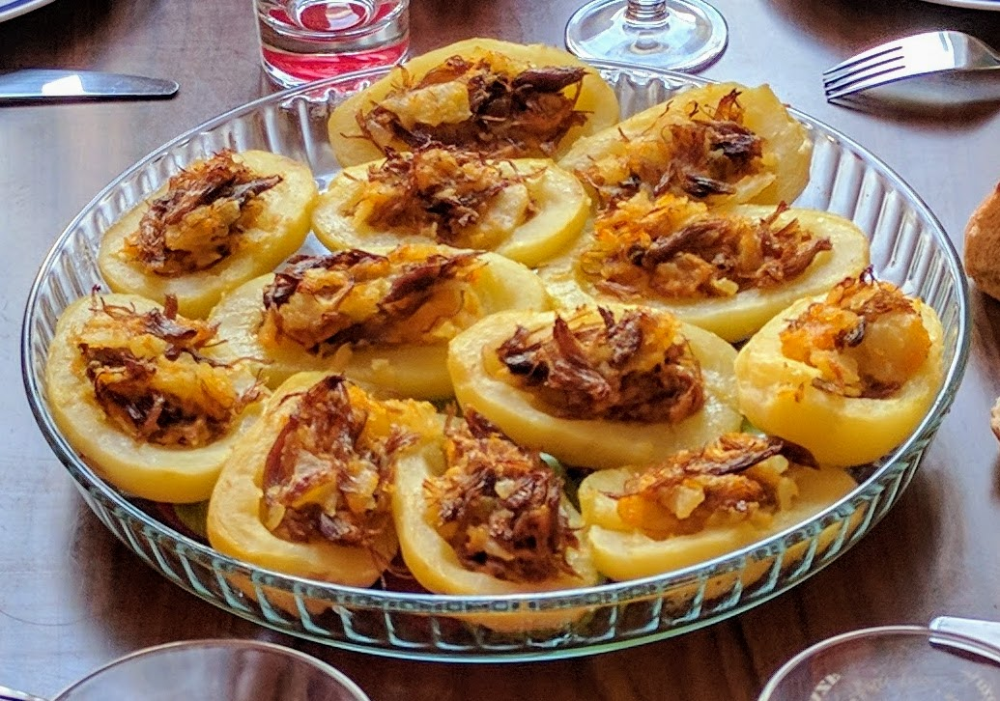

Bouchées landaises

Pour 16 bouchées :
- 8 petites pommes de terre à chair ferme
- Une cuisse de canard confite
- 20g de carottes râpées
- Sel
- Éplucher les pommes de terre, les plonger dans une casserole d'eau froide salée, faire chauffer et laisser cuire pendant une demi-heure environ (on peut les piquer avec un couteau pour vérifier la cuisson)
- Essuyer les pommes de terre et les couper en deux dans le sens de la longueur. Avec une cuillère parisienne, creuser l'intérieur de chaque pomme de terre pour pouvoir la farcir. Réserver la chair.
- Réchauffer la cuisse de canard dans une poêle, et effilocher sa chair du bout des doigts. Ajouter les carottes râpées, la chair des pommes de terre, et mélanger pour que la graisse de canard enrobe bien tout.
- Farcir les patates avec le mélange, les placer dans un plat allant au four, et faire réchauffer trois minutes sous le gril. Déguster tiède.
Variante : On peut aussi ajouter, à la sortie du four, un peu de foie gras sur les pommes de terre.